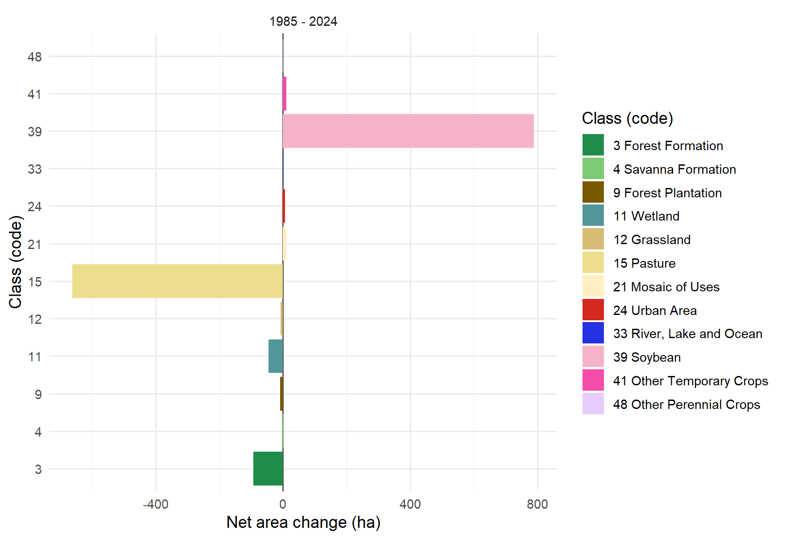
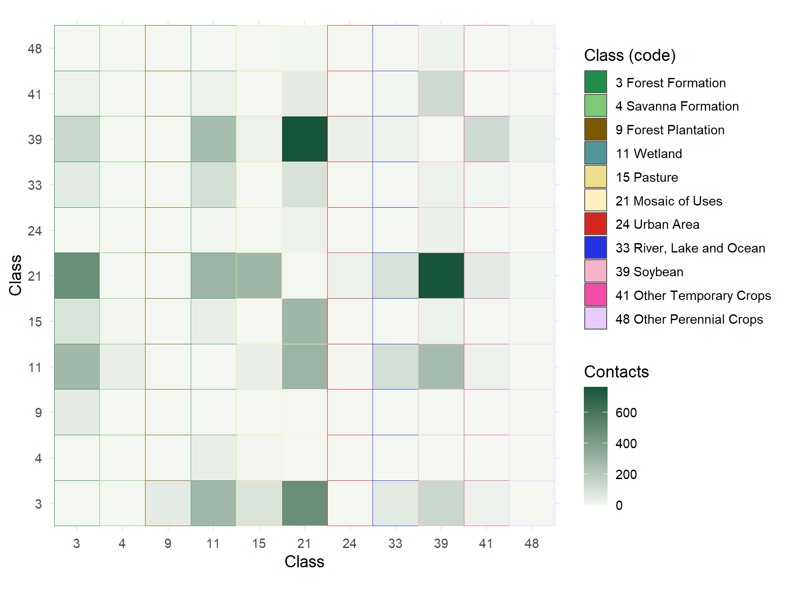
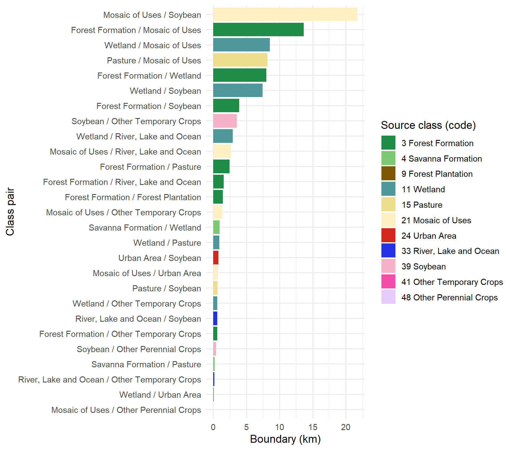

8 Change and adjacency
Transitions between dates
Knowing how much each class grew or shrank does not tell you where the area
went. land_change() answers that question by comparing the maps pixel by
pixel, at two or three dates, and measuring what stayed, what was converted and
into what:
change <- land_change(maps, years = c(1985, 2024), language = "en")
change$plot
| Class | 1985 (ha) | 2024 (ha) | Gain (ha) | Loss (ha) | Net (ha) |
|---|---|---|---|---|---|
| Soybean | 0 | 790 | 790 | 0 | 790 |
| Pasture | 715 | 53 | 12 | 675 | -663 |
| Mosaic of Uses | 136 | 146 | 119 | 109 | 10 |
| Forest Formation | 200 | 107 | 20 | 113 | -93 |
| Wetland | 146 | 100 | 3 | 49 | -46 |
Between 1985 and 2024, 78% of the area changed class. Almost all of that is quantity change (818 ha), meaning that one class grew by taking the place of another; only 152 ha are swaps of position between classes. The forest illustrates the picture well: only 44% of the 1985 forest formation was still standing in 2024, and the 20 ha that appeared elsewhere did not make up for the 113 ha that were lost.
The net change of each class sums up, in a single plot, which classes gained and which lost area over the period:
change$change_plot
With years = c(1985, 2004, 2024), the diagram gains a third column and each
pixel gets a trajectory: stable, changed once, changed twice or returned to its
original class:
change3 <- land_change(maps, years = c(1985, 2004, 2024), language = "en")| Trajectory | Area (ha) | Share (%) |
|---|---|---|
| Stable | 246.9 | 19.9 |
| Changed once | 707.6 | 57.0 |
| Returned to the original class | 25.3 | 2.0 |
| Changed twice | 262.4 | 21.1 |
Adjacency between classes
land_to_graph() looks at neighbourhoods: it counts the contacts between pixels
of different classes and builds the landscape network, in which each node is a
class and the thickness of each link is the number of contacts between them.
With weight = "boundary", the thickness becomes the boundary length in metres.
network <- land_to_graph(maps, year = 2024, language = "en")
network$plot
In 2024, the most connected class is wetland, which borders 8 classes along 29.6 km of edges.
Boundaries and interfaces
The adjacency matrix shows how many contacts there are between each pair of
classes; the diagonal (contacts of a class with itself) is left out unless
include_self = TRUE:
network$heatmap
Interfaces are the boundaries between pairs of classes, in kilometres. They are where land use changes across the landscape and where edge effects concentrate:
network$edge_plot
The largest interface, between mosaic of uses and soybean, adds up to 21.8 km (23% of the contacts between classes). The forest borders 7 classes, the main one being mosaic of uses.
network$node_metrics gives, for each class, degree (how many neighbouring
classes), strength (how many contacts), betweenness and neighbourhood entropy,
which is high when the class borders many others in similar proportions:
| Class | Degree | Strength | Betweenness | Neighbourhood entropy |
|---|---|---|---|---|
| Mosaic of Uses | 8 | 1984 | 23 | 1.57 |
| Soybean | 8 | 1368 | 24 | 1.35 |
| Forest Formation | 7 | 1102 | 9 | 1.53 |
| Wetland | 8 | 1029 | 9 | 1.61 |
| Pasture | 5 | 434 | 0 | 1.02 |
| River, Lake and Ocean | 5 | 276 | 0 | 1.33 |
| Other Temporary Crops | 5 | 221 | 0 | 1.21 |
| Urban Area | 3 | 54 | 0 | 0.87 |
| Forest Plantation | 1 | 50 | 0 | 0.00 |
| Savanna Formation | 2 | 40 | 0 | 0.46 |
| Other Perennial Crops | 2 | 18 | 0 | 0.35 |
network$graph_metrics sums up the whole network: density (0.49),
transitivity (0.66) and the share of contacts between
different classes (11%), an indicator of how
patchy the landscape is.
The graph also has an interactive version, in which each class and each link show their values on hover:
network$graph_plot